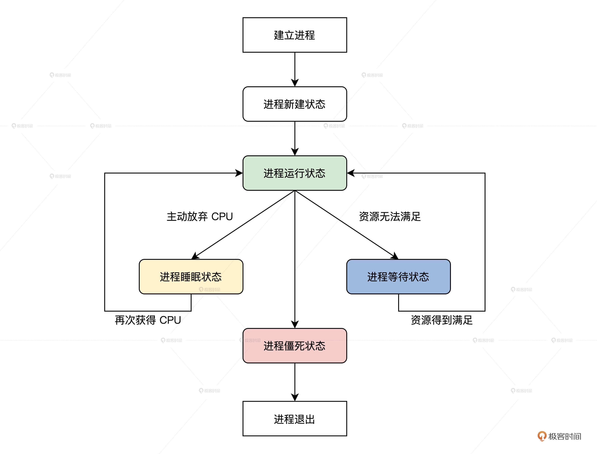
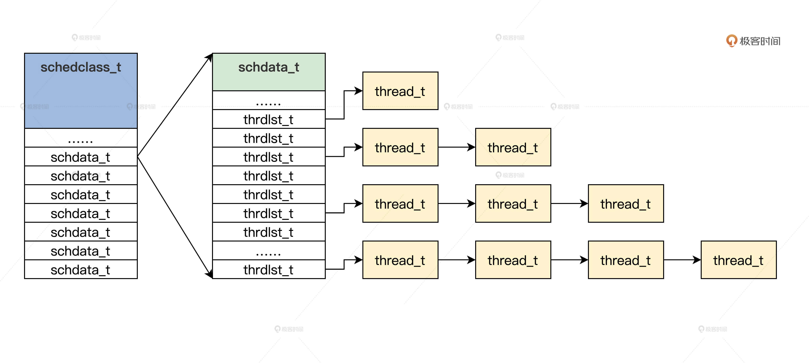
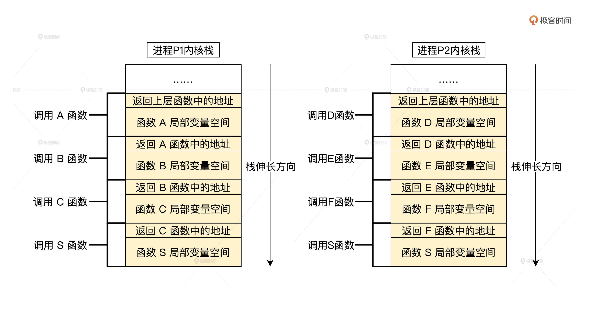

- 00 开篇词 为什么要学写一个操作系统？.md.html
- 00 编辑手记 升级认知，迭代自己的操作系统.md.html
- 01 程序的运行过程：从代码到机器运行.md.html
- 02 几行汇编几行C：实现一个最简单的内核.md.html
- 03 黑盒之中有什么：内核结构与设计.md.html
- 04 震撼的Linux全景图：业界成熟的内核架构长什么样？.md.html
- 05 CPU工作模式：执行程序的三种模式.md.html
- 06 虚幻与真实：程序中的地址如何转换？.md.html
- 07 Cache与内存：程序放在哪儿？.md.html
- 08 锁：并发操作中，解决数据同步的四种方法.md.html
- 09 瞧一瞧Linux：Linux的自旋锁和信号量如何实现？.md.html
- 10 设置工作模式与环境（上）：建立计算机.md.html
- 11 设置工作模式与环境（中）：建造二级引导器.md.html
- 12 设置工作模式与环境（下）：探查和收集信息.md.html
- 13 第一个C函数：如何实现板级初始化？.md.html
- 14 Linux初始化（上）：GRUB与vmlinuz的结构.md.html
- 15 Linux初始化（下）：从_start到第一个进程.md.html
- 16 划分土地（上）：如何划分与组织内存？.md.html
- 17 划分土地（中）：如何实现内存页面初始化？.md.html
- 18 划分土地（下）：如何实现内存页的分配与释放？.md.html
- 19 土地不能浪费：如何管理内存对象？.md.html
- 20 土地需求扩大与保障：如何表示虚拟内存？.md.html
- 21 土地需求扩大与保障：如何分配和释放虚拟内存？.md.html
- 22 瞧一瞧Linux：伙伴系统如何分配内存？.md.html
- 23 瞧一瞧Linux：SLAB如何分配内存？.md.html
- 24 活动的描述：到底什么是进程？.md.html
- 25 多个活动要安排（上）：多进程如何调度？.md.html
- 26 多个活动要安排（下）：如何实现进程的等待与唤醒机制？.md.html
- 27 瞧一瞧Linux：Linux如何实现进程与进程调度_.md.html
- 28 部门分类：如何表示设备类型与设备驱动？.md.html
- 29 部门建立：如何在内核中注册设备？.md.html
- 30 部门响应：设备如何处理内核I_O包？.md.html
- 31 瞧一瞧Linux：如何获取所有设备信息？.md.html
- 32 仓库结构：如何组织文件_.md.html
- 33 仓库划分：文件系统的格式化操作.md.html
- 34 仓库管理：如何实现文件的六大基本操作？.md.html
- 35 瞧一瞧Linux：虚拟文件系统如何管理文件？.md.html
- 36 从URL到网卡：如何全局观察网络数据流动？.md.html
- 37 从内核到应用：网络数据在内核中如何流转.md.html
- 38 从单排到团战：详解操作系统的宏观网络架构.md.html
- 39 瞧一瞧Linux：详解socket实现与网络编程接口.md.html
- 40 瞧一瞧Linux：详解socket的接口实现.md.html
- 41 服务接口：如何搭建沟通桥梁？.md.html
- 42 瞧一瞧Linux：如何实现系统API？.md.html
- 43 虚拟机内核：KVM是什么？.md.html
- 44 容器：如何理解容器的实现机制？.md.html
- 45 ARM新宠：苹果的M1芯片因何而快？.md.html
- 46 AArch64体系：ARM最新编程架构模型剖析.md.html
- LMOS来信：第二季课程带你“手撕”计算机基础.md.html
- 大咖助场 以无法为有法，以无限为有限.md.html
- 用户故事 yiyang：我的上机实验“爬坑指南”.md.html
- 用户故事 成为面向“知识库”的工程师.md.html
- 用户故事 技术人如何做选择，路才越走越宽？.md.html
- 用户故事 操作系统发烧友：看不懂？因为你没动手.md.html
- 用户故事 用好动态调试，助力课程学习.md.html
- 用户故事 艾同学：路虽远，行则将至.md.html
- 结束语 生活可以一地鸡毛，但操作系统却是心中的光.md.html
- 捐赠
25 多个活动要安排（上）：多进程如何调度？
你好，我是LMOS。
上节课，我们了解了什么是进程，还一起写好了建立进程的代码。不知道你想过没有，如果在系统中只有一个进程，那我们提出进程相关的概念和实现与进程有关的功能，是不是就失去了意义呢？
显然，提出进程的目的之一，就是为了实现多个进程，使系统能运行多个应用程序。今天我们就在单进程的基础上扩展多进程，并在进程与进程之间进行调度。
“你存在，我深深的脑海里，我的梦里，我的心里，我的代码里”，我经常一边哼着歌，一边写着代码，这就是我们大脑中最典型“多进程”场景。
再来举一个例子：你在Windows上，边听音乐，边浏览网页，还能回复微信消息。Windows之所以能同时运行多个应用程序，就是因为Windows内核支持多进程机制，这就是最典型的多进程场景了。
这节课配套代码，你可以点击这里下载。
为什么需要多进程调度
我们先来搞清楚多进程调度的原因是什么，我来归纳一下。
第一，CPU同一时刻只能运行一个进程，而CPU个数总是比进程个数少，这就需要让多进程共用一个CPU，每个进程在这个CPU上运行一段时间。
第二点原因，当一个进程不能获取某种资源，导致它不能继续运行时，就应该让出CPU。当然你也可以把第一点中的CPU时间，也归纳为一种资源，这样就合并为一点：进程拿不到资源就要让出CPU。我来为你画幅图就明白了，如下所示。
上图中，有五个进程，其中浏览器进程和微信进程依赖于网络和键盘的数据资源，如果不能满足它们，就应该通过进程调度让出CPU。
而两个科学计算进程，则更多的依赖于CPU，但是如果它们中的一个用完了自己的CPU时间，也得借助进程调度让出CPU，不然它就会长期霸占CPU，导致其它进程无法运行。需要注意的是，每个进程都会依赖一种资源，那就是CPU时间，你可以把CPU时间理解为它就是CPU，一个进程必须要有CPU才能运行。
这里我们只需要明白，多个进程为什么要进行调度，就可以了。
管理进程
下面我们一起来看看怎么管理进程，我们的Cosmos操作系统也支持多个进程，有了多个进程就要把它们管理起来。说白了，就是弄清楚这些进程有哪些状态，是如何组织起来的，又要从哪找到它们。
进程的生命周期
人有生老病死，对于一个进程来说也是一样。一个进程从建立开始，接着运行，然后因为资源问题不得不暂停运行，最后退出系统。这一过程，我们称为进程的生命周期。在系统实现中，通常用进程的状态表示进程的生命周期。进程的状态我们用几个宏来定义，如下所示。
#define TDSTUS_RUN 0 //进程运行状态
#define TDSTUS_SLEEP 3 //进程睡眠状态
#define TDSTUS_WAIT 4 //进程等待状态
#define TDSTUS_NEW 5 //进程新建状态
#define TDSTUS_ZOMB 6 //进程僵死状态
可以发现，我们的进程有5个状态。其中进程僵死状态，表示进程将要退出系统不再进行调度。那么进程状态之间是如何转换的，别急，我来给画一幅图解释，如下所示。

上图中已经为你展示了，从建立进程到进程退出系统各状态之间的转换关系和需要满足的条件。
如何组织进程
首先我们来研究如何组织进程。由于系统中会有许多个进程，在上节课中我们用thread_t结构表示一个进程，因此会有多个thread_t结构。而根据刚才我们对进程生命周期的解读，我们又知道了进程是随时可能建立或者退出的，所以系统中会随时分配或者删除thread_t结构。
要应对这样的情况，最简单的办法就是使用链表数据结构，而且我们的进程有优先级，所以我们可以设计成每个优先级对应一个链表头。
下面我们来把设计落地成数据结构，由于这是调度器模块，所以我们要建立几个文件krlsched.h、krlsched.c，在其中写上代码，如下所示。
typedef struct s_THRDLST
{
list_h_t tdl_lsth; //挂载进程的链表头
thread_t* tdl_curruntd; //该链表上正在运行的进程
uint_t tdl_nr; //该链表上进程个数
}thrdlst_t;
typedef struct s_SCHDATA
{
spinlock_t sda_lock; //自旋锁
uint_t sda_cpuid; //当前CPU id
uint_t sda_schdflgs; //标志
uint_t sda_premptidx; //进程抢占计数
uint_t sda_threadnr; //进程数
uint_t sda_prityidx; //当前优先级
thread_t* sda_cpuidle; //当前CPU的空转进程
thread_t* sda_currtd; //当前正在运行的进程
thrdlst_t sda_thdlst[PRITY_MAX]; //进程链表数组
}schdata_t;
typedef struct s_SCHEDCALSS
{
spinlock_t scls_lock; //自旋锁
uint_t scls_cpunr; //CPU个数
uint_t scls_threadnr; //系统中所有的进程数
uint_t scls_threadid_inc; //分配进程id所用
schdata_t scls_schda[CPUCORE_MAX]; //每个CPU调度数据结构
}schedclass_t;
从上述代码中，我们发现schedclass_t是个全局数据结构，这个结构里包含一个schdata_t结构数组，数组大小根据CPU的数量决定。在每个schdata_t结构中，又包含一个进程优先级大小的thrdlst_t结构数组。我画幅图，你就明白了。这幅图能让你彻底理清以上数据结构之间的关系。

好，下面我们就去定义这个schedclass_t数据结构并初始化。
管理进程的初始化
管理进程的初始化非常简单，就是对schedclass_t结构的变量的初始化。
通过前面的学习，你也许已经发现了，schedclass_t结构的变量应该是个全局变量，所以先得在cosmos/kernel/krlglobal.c文件中定义一个schedclass_t结构的全局变量，如下所示。
KRL_DEFGLOB_VARIABLE(schedclass_t,osschedcls);
有了schedclass_t结构的全局变量osschedcls，接着我们在cosmos/kernel/krlsched.c文件中写好初始化osschedcls变量的代码，如下所示。
void thrdlst_t_init(thrdlst_t *initp)
{
list_init(&initp->tdl_lsth); //初始化挂载进程的链表
initp->tdl_curruntd = NULL; //开始没有运行进程
initp->tdl_nr = 0; //开始没有进程
return;
}
void schdata_t_init(schdata_t *initp)
{
krlspinlock_init(&initp->sda_lock);
initp->sda_cpuid = hal_retn_cpuid(); //获取CPU id
initp->sda_schdflgs = NOTS_SCHED_FLGS;
initp->sda_premptidx = 0;
initp->sda_threadnr = 0;
initp->sda_prityidx = 0;
initp->sda_cpuidle = NULL; //开始没有空转进程和运行的进程
initp->sda_currtd = NULL;
for (uint_t ti = 0; ti < PRITY_MAX; ti++)
{//初始化schdata_t结构中的每个thrdlst_t结构
thrdlst_t_init(&initp->sda_thdlst[ti]);
}
return;
}
void schedclass_t_init(schedclass_t *initp)
{
krlspinlock_init(&initp->scls_lock);
initp->scls_cpunr = CPUCORE_MAX; //CPU最大个数
initp->scls_threadnr = 0; //开始没有进程
initp->scls_threadid_inc = 0;
for (uint_t si = 0; si < CPUCORE_MAX; si++)
{//初始化osschedcls变量中的每个schdata_t
schdata_t_init(&initp->scls_schda[si]);
}
return;
}
void init_krlsched()
{ //初始化osschedcls变量
schedclass_t_init(&osschedcls);
return;
}
上述代码非常简单，由init_krlsched函数调用schedclass_t_init函数，对osschedcls变量进行初始化工作，但是init_krlsched函数由谁调用呢？
还记得之前学的内核功能层的入口函数吗（可回看第13节课）？它就是cosmos/kernel/krlinit.c文件中的init_krl函数，我们在这个函数中来调用init_krlsched函数，代码如下所示。
void init_krl()
{
init_krlsched();
die(0);//控制不让init_krl函数返回
return;
}
至此，管理进程的初始化就完成了，其实这也是我们进程调度器的初始化，就是这么简单吗？当然不是，还有重要的进程调度等我们搞定。
设计实现进程调度器
管理进程的数据结构已经初始化好了，现在我们开始设计实现进程调度器。
进程调度器是为了在合适的时间点，合适的代码执行路径上进行进程调度。说白了，就是从当前运行进程切换到另一个进程上运行，让当前进程停止运行，由CPU开始执行另一个进程的代码。这个事情说来简单，但做起来并不容易，下面我将带领你一步步实现进程调度器。
进程调度器入口
首先请你想象一下，进程调度器是什么样子的。其实，进程调度器不过是个函数，和其它函数并没有本质区别，你在其它很多代码执行路径上都可以调用它。只是它会从一个进程运行到下一个进程。
那这个函数的功能就能定下来了：无非是确定当前正在运行的进程，然后选择下一个将要运行的进程，最后从当前运行的进程，切换到下一个将要运行的进程。下面我们先来写好进程调度器的入口函数，如下所示。
void krlschedul()
{
thread_t *prev = krlsched_retn_currthread(),//返回当前运行进程
*next = krlsched_select_thread();//选择下一个运行的进程
save_to_new_context(next, prev);//从当前进程切换到下一个进程
return;
}
我们只要在任何需要调度进程的地方，调用上述代码中的函数就可以了。下面我们开始实现krlschedul函数中的其它功能逻辑。
如何获取当前运行的进程
获取当前正在运行的进程，目的是为了保存当前进程的运行上下文，确保在下一次调度到当前运行的进程时能够恢复运行。后面你就会看到，每次切换到下一个进程运行时，我们就会将下一个运行的进程设置为当前运行的进程。
这个获取当前运行进程的函数，它的代码是这样的。
thread_t *krlsched_retn_currthread()
{
uint_t cpuid = hal_retn_cpuid();
//通过cpuid获取当前cpu的调度数据结构
schdata_t *schdap = &osschedcls.scls_schda[cpuid];
if (schdap->sda_currtd == NULL)
{//若调度数据结构中当前运行进程的指针为空，就出错死机
hal_sysdie("schdap->sda_currtd NULL");
}
return schdap->sda_currtd;//返回当前运行的进程
}
上述代码非常简单，如果你认真了解过前面组织进程的数据结构，就会发现，schdata_t结构中的sda_currtd字段正是保存当前正在运行进程的地址。返回这个字段的值，就能取得当前正在运行的进程。
选择下一个进程
根据调度器入口函数的设计，取得了当前正在运行的进程之后，下一步就是选择下个将要投入运行的进程。
在商业系统中，这个过程极为复杂。因为这个过程是进程调度算法的核心，它关乎到进程的吞吐量，能否及时响应请求，CPU的利用率，各个进程之间运行获取资源的公平性，这些问题综合起来就会影响整个操作系统的性能、可靠性。
作为初学者，我们不必搞得如此复杂，可以使用一个简单的优先级调度算法，就是始终选择优先级最高的进程，作为下一个运行的进程。
完成这个功能的代码，如下所示。
thread_t *krlsched_select_thread()
{
thread_t *retthd, *tdtmp;
cpuflg_t cufg;
uint_t cpuid = hal_retn_cpuid();
schdata_t *schdap = &osschedcls.scls_schda[cpuid];
krlspinlock_cli(&schdap->sda_lock, &cufg);
for (uint_t pity = 0; pity < PRITY_MAX; pity++)
{//从最高优先级开始扫描
if (schdap->sda_thdlst[pity].tdl_nr > 0)
{//若当前优先级的进程链表不为空
if (list_is_empty_careful(&(schdap->sda_thdlst[pity].tdl_lsth)) == FALSE)
{//取出当前优先级进程链表下的第一个进程
tdtmp = list_entry(schdap->sda_thdlst[pity].tdl_lsth.next, thread_t, td_list);
list_del(&tdtmp->td_list);//脱链
if (schdap->sda_thdlst[pity].tdl_curruntd != NULL)
{//将这sda_thdlst[pity].tdl_curruntd的进程挂入链表尾
list_add_tail(&(schdap->sda_thdlst[pity].tdl_curruntd->td_list), &schdap->sda_thdlst[pity].tdl_lsth);
}
schdap->sda_thdlst[pity].tdl_curruntd = tdtmp;
retthd = tdtmp;//将选择的进程放入sda_thdlst[pity].tdl_curruntd中，并返回
goto return_step;
}
if (schdap->sda_thdlst[pity].tdl_curruntd != NULL)
{//若sda_thdlst[pity].tdl_curruntd不为空就直接返回它
retthd = schdap->sda_thdlst[pity].tdl_curruntd;
goto return_step;
}
}
}
//如果最后也没有找到进程就返回默认的空转进程
schdap->sda_prityidx = PRITY_MIN;
retthd = krlsched_retn_idlethread();
return_step:
//解锁并返回进程
krlspinunlock_sti(&schdap->sda_lock, &cufg);
return retthd;
}
上述代码的逻辑非常简单，我来给你梳理一下。
首先，从高到低扫描优先级进程链表，然后若当前优先级进程链表不为空，就取出该链表上的第一个进程，放入thrdlst_t结构中的tdl_curruntd字段中，并把之前thrdlst_t结构的tdl_curruntd字段中的进程挂入该链表的尾部，并返回。最后，当扫描到最低优先级时也没有找到进程，就返回默认的空转进程。
这个算法极其简单，但是对我们学习原理却足够了，也欢迎你举一反三，动手实现更高级的调度算法。
获取空转进程
在选择下一个进程的函数中，如果没有找到合适的进程，就返回默认的空转进程。
你可以想一下，为什么要有一个空转进程，直接返回NULL不行吗？
还真不行，因为调度器的功能必须完成从一个进程到下一个进程的切换，如果没有下一个进程，而上一个进程又不能运行了，调度器将无处可去，整个系统也将停止运行，这当然不是我们要的结果，所以我们要给系统留下最后一条路。
下面我们先来实现获取空转进程的函数，如下所示。
thread_t *krlsched_retn_idlethread()
{
uint_t cpuid = hal_retn_cpuid();
//通过cpuid获取当前cpu的调度数据结构
schdata_t *schdap = &osschedcls.scls_schda[cpuid];
if (schdap->sda_cpuidle == NULL)
{//若调度数据结构中空转进程的指针为空，就出错死机
hal_sysdie("schdap->sda_cpuidle NULL");
}
return schdap->sda_cpuidle;//返回空转进程
}
上述代码非常简单，和我们之前实现的获取当前运行进程的函数如出一辙，只是使用schdata_t结构中的字段发生了改变。好，接下来我们要处理更重要的问题，那就是进程之间的切换。
进程切换
经过前面的流程，我们已经找到了当前运行的进程P1，和下一个将要运行的进程P2，现在就进入最重要的进程切换流程。
在进程切换前，我们还要了解另一个重要的问题：进程在内核中函数调用路径，那什么是函数调用路径。
举个例子，比如进程P1调用了函数A，接着在函数A中调用函数B，然后在函数B中调用了函数C，最后在函数C中调用了调度器函数S，这个函数A到函数S就是进程P1的函数调用路径。
再比如，进程P2开始调用了函数D，接着在函数D中调用函数E，然后在函数E中又调用了函数F，最后在函数F中调用了调度器函数S，函数D、E、F到函数S就是进程P2的函数调用路径。
函数调用路径是通过栈来保存的，对于运行在内核空间中的进程，就是保存在对应的内核栈中。我为你准备了一幅图帮助理解。

以上就是进程P1，P2的函数调用路径，也是它们调用函数时各自内核栈空间状态的变化结果。说个题外话，你有没有发现。C语言栈才是最高效内存管理，而且变量的生命周期也是妥妥的，比很多高级语言的内存垃圾回收器都牛。
有了前面的基础，现在我们来动手实现进程切换的函数。在这个函数中，我们要干这几件事。
首先，我们把当前进程的通用寄存器保存到当前进程的内核栈中；然后，保存CPU的RSP寄存器到当前进程的机器上下文结构中，并且读取保存在下一个进程机器上下文结构中的RSP的值，把它存到CPU的RSP寄存器中；接着，调用一个函数切换MMU页表；最后，从下一个进程的内核栈中恢复下一个进程的通用寄存器。
这样下一个进程就开始运行了，代码如下所示。
void save_to_new_context(thread_t *next, thread_t *prev)
{
__asm__ __volatile__(
"pushfq \n\t"//保存当前进程的标志寄存器
"cli \n\t" //关中断
//保存当前进程的通用寄存器
"pushq %%rax\n\t"
"pushq %%rbx\n\t"
"pushq %%rcx\n\t"
"pushq %%rdx\n\t"
"pushq %%rbp\n\t"
"pushq %%rsi\n\t"
"pushq %%rdi\n\t"
"pushq %%r8\n\t"
"pushq %%r9\n\t"
"pushq %%r10\n\t"
"pushq %%r11\n\t"
"pushq %%r12\n\t"
"pushq %%r13\n\t"
"pushq %%r14\n\t"
"pushq %%r15\n\t"
//保存CPU的RSP寄存器到当前进程的机器上下文结构中
"movq %%rsp,%[PREV_RSP] \n\t"
//把下一个进程的机器上下文结构中的RSP的值，写入CPU的RSP寄存器中
"movq %[NEXT_RSP],%%rsp \n\t"//事实上这里已经切换到下一个进程了，因为切换进程的内核栈
//调用__to_new_context函数切换MMU页表
"callq __to_new_context\n\t"
//恢复下一个进程的通用寄存器
"popq %%r15\n\t"
"popq %%r14\n\t"
"popq %%r13\n\t"
"popq %%r12\n\t"
"popq %%r11\n\t"
"popq %%r10\n\t"
"popq %%r9\n\t"
"popq %%r8\n\t"
"popq %%rdi\n\t"
"popq %%rsi\n\t"
"popq %%rbp\n\t"
"popq %%rdx\n\t"
"popq %%rcx\n\t"
"popq %%rbx\n\t"
"popq %%rax\n\t"
"popfq \n\t" //恢复下一个进程的标志寄存器
//输出当前进程的内核栈地址
: [ PREV_RSP ] "=m"(prev->td_context.ctx_nextrsp)
//读取下一个进程的内核栈地址
: [ NEXT_RSP ] "m"(next->td_context.ctx_nextrsp), "D"(next), "S"(prev)//为调用__to_new_context函数传递参数
: "memory");
return;
}
你看，代码中的save_to_new_context函数，是不是有点偷天换日的感觉？
通过切换进程的内核栈，导致切换进程，因为进程的函数调用路径就保存在对应的内核栈中，只要调用krlschedul函数，最后的函数调用路径一定会停在save_to_new_context函数中，当save_to_new_context函数一返回，就会导致回到调用save_to_new_context函数的下一行代码开始运行，在这里就是返回到krlschedul函数中，最后层层返回。
我知道你很难理解这一过程，所以准备了一幅图辅助说明。

结合上图，你就能理解这个进程切换的原理了。同时你也会发现一个问题，就是这个切换机制能够正常运行，必须保证下一个进程已经被调度过，也就是它调用执行过krlschedul函数。
那么已知新建进程绝对没有调用过krlschedul函数，所以它得进行特殊处理。我们在__to_new_context函数中完成这个特殊处理，代码如下所示。
void __to_new_context(thread_t *next, thread_t *prev)
{
uint_t cpuid = hal_retn_cpuid();
schdata_t *schdap = &osschedcls.scls_schda[cpuid];
//设置当前运行进程为下一个运行的进程
schdap->sda_currtd = next;
//设置下一个运行进程的tss为当前CPU的tss
next->td_context.ctx_nexttss = &x64tss[cpuid];
//设置当前CPU的tss中的R0栈为下一个运行进程的内核栈
next->td_context.ctx_nexttss->rsp0 = next->td_krlstktop;
//装载下一个运行进程的MMU页表
hal_mmu_load(&next->td_mmdsc->msd_mmu);
if (next->td_stus == TDSTUS_NEW)
{ //如果是新建进程第一次运行就要进行处理
next->td_stus = TDSTUS_RUN;
retnfrom_first_sched(next);
}
return;
}
上面代码的注释已经很清楚了，__to_new_context负责设置当前运行的进程，处理CPU发生中断时需要切换栈的问题，又切换了一个进程的MMU页表（即使用新进程的地址空间），最后如果是新建进程第一次运行，就调用retnfrom_first_sched函数进行处理。下面我们来写好这个函数。
void retnfrom_first_sched(thread_t *thrdp)
{
__asm__ __volatile__(
"movq %[NEXT_RSP],%%rsp\n\t" //设置CPU的RSP寄存器为该进程机器上下文结构中的RSP
//恢复进程保存在内核栈中的段寄存器
"popq %%r14\n\t"
"movw %%r14w,%%gs\n\t"
"popq %%r14\n\t"
"movw %%r14w,%%fs\n\t"
"popq %%r14\n\t"
"movw %%r14w,%%es\n\t"
"popq %%r14\n\t"
"movw %%r14w,%%ds\n\t"
//恢复进程保存在内核栈中的通用寄存器
"popq %%r15\n\t"
"popq %%r14\n\t"
"popq %%r13\n\t"
"popq %%r12\n\t"
"popq %%r11\n\t"
"popq %%r10\n\t"
"popq %%r9\n\t"
"popq %%r8\n\t"
"popq %%rdi\n\t"
"popq %%rsi\n\t"
"popq %%rbp\n\t"
"popq %%rdx\n\t"
"popq %%rcx\n\t"
"popq %%rbx\n\t"
"popq %%rax\n\t"
//恢复进程保存在内核栈中的RIP、CS、RFLAGS，（有可能需要恢复进程应用程序的RSP、SS）寄存器
"iretq\n\t"
:
: [ NEXT_RSP ] "m"(thrdp->td_context.ctx_nextrsp)
: "memory");
}
retnfrom_first_sched函数不会返回到调用它的__to_new_context函数中，而是直接运行新建进程的相关代码（如果你不理解这段代码的原理，可以回顾上一课，看看建立进程时，对进程内核栈进行的初始化工作）。
好，进行到这里，我们已经设计出了我们的Cosmos的进程调度器，但我们都知道，这样的调度器还不够，我们还没有解决进程的等待和唤醒问题，这些内容下节课我再跟你详细分享。
重点回顾
这节课我们从了解为什么需要多进程调度开始，随后实现子调度管理多个进程，最终实现了进程调度器，这里面有很多重要的知识点，我来为你梳理一下。
1.为什么需要多进程调度？我们分析了系统中总有些资源不能满足每个进程的需求，所以一些进程必须要走走停停，这就需要不同的进程来回切换到CPU上运行，为了实现这个机制就需要多进程调度。
2.组织多个进程。为了实现进程管理，必须要组织多个进程。我们设计了调度器数据结构，在该结构中，我们使用优先级链表数组来组织多个进程，并且对这些数据结构的变量进行了初始化。
3.进程调度。有了多个进程就需要进程调度，我们的进程调度器是一个函数，在这个函数中选择了当前运行进程和下一个将要运行的进程，如果实在没有可运行的进程就选择空转进程，最后关键是进程间切换，我们是通过切换进程的内核栈来切换进程的函数调用路径，当调度器函数返回的时候已经是另一个进程了。
思考题
请问当调度器函数调度到一个新建进程时，为何要进入retnfrom_first_sched函数呢？
欢迎你在留言区积极分享，相信通过主动输出，你将更好地理解这节课的内容。也欢迎把这节课分享给你的朋友，和他交流探讨，
好，我是LMOS，我们下节课见！
© 2019 - 2023 Liangliang Lee. Powered by gin and hexo-theme-book.